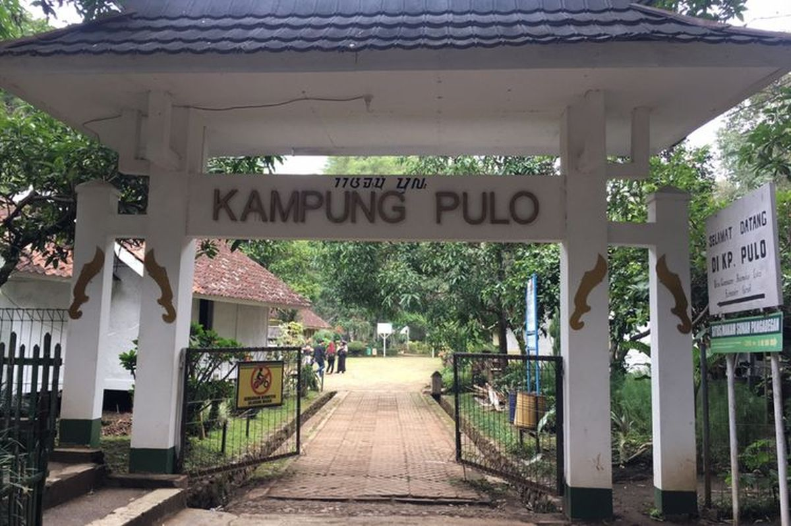
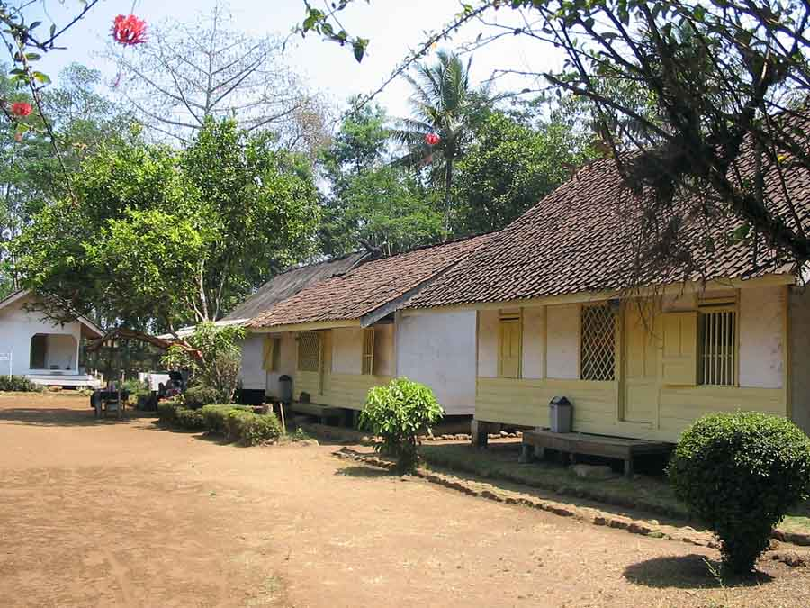
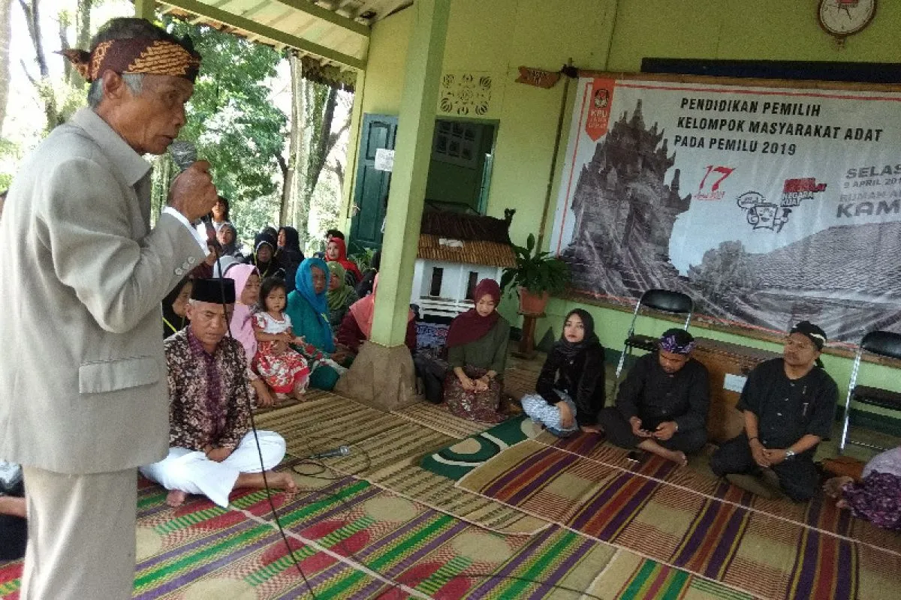

Sejarah

Kampung ieu téh ti heula lolobana wargana ngagem agama Hindu. Teras sumping Eyang Embah Dalem Arif Muhammad,
hiji tokoh panyebar agama Islam dina abad ka-17. Numutkeun legenda satempat, Eyang Arif Muhammad asalna ti
Karajaan Mataram sarta netep di wewengkon ieu sanggeus hasil nyebarkeun ajaran Islam saatos anjeunna éléh
dina serangan ka Walanda.
Kampung Pulo diwangun kalayan konsép nu pinuh ku harti, dimana aya tujuh imah adat nu ngagambarkeun tujuh anak
Eyang Arif Muhammad (6 urang awéwé jeung 1 urang lalaki). Ayana imah-imah ieu ngagambarkeun filsafat jeung
nilai-nilai karuhun nu masih diagem pageuh ku masarakat satempat nepi ka ayeuna. Ku kituna, di Kampung Pulo aya
6 imah adat nu ngajajar silih papaten, masing-masing 3 imah di kénca jeung 3 di katuhu, ditambah hiji masjid.
Tradisi Kampung Pulo
Tradisi di Kampung Pulo kacida kandelna ku nilai-nilai adat nu diwariskeun turun-tumurun. Salah sahiji tradisi nu paling
kaciri nyaéta larangan pikeun nambih atawa ngurangan jumlah imah di kampung éta, nu kudu tetep genep imah adat
jeung hiji masjid. Genep imah ieu dihuni ku turunan genep anak awéwé Embah Dalem Arif Muhammad, sarta unggal
parobihan dina kapamilikan imah kudu ngaliwatan musyawarah kulawarga. Salian ti éta, sakabéh imah kudu tetep
dina wangun imah panggung, nu ngagambarkeun kapatuhan masarakat kana warisan karuhun sarta ngajaga kasaimbangan
antara tradisi jeung kahirupan sapopoé.

Salian ti éta, Kampung Pulo ogé mibanda tradisi nu ngatur hubungan pernikahan jeung padumukan. Turunan Embah Dalem
Arif Muhammad diidinan nikah jeung warga luar kampung, tapi sanggeus nikah, maranéhna kudu ninggalkeun
Kampung Pulo. Hal ieu dimaksudkeun pikeun ngajaga populasi kampung supaya tetep stabil sarta saluyu jeung
aturan adat. Lamun aya kulawarga nu maot, kakara kulawarga séjén bisa nempokeun imah éta sanggeus ngalangkungan
musyawarah kulawarga. Tradisi ieu mastikeun yén unggal parobihan dina komunitas lumangsung sacara tertib jeung
harmonis, ngajaga kesinambungan jeung kaharmonisan adat nu geus dijaga mangabad-abad.
Larangan Di Kampung Pulo
Sababaraha pantangan jeung "pamali" masih dianut ku masarakat satempat nepi ka ayeuna, di antarana: larangan
ziarah dina poé Rebo, larangan ngagunakeun atap imah nu wangunna jure’ (prisma), larangan ngarobah tatanan
jeung jumlah imah, larangan neunggeul gong gedé, jeung larangan miara sasatoan nu boga suku opat.

Sedengkeun kagiatan kaagamaan masarakat Kampung Adat Pulo meh sarua jeung masarakat adat séjénna,
nyaéta mibanda upacara-upacara adat sapertos: tujuh bulanan jeung ngalahirkeun, marhabaan, upacara pupus,
upacara tatanén, sarta meresihan atawa memandian banda pusaka.
Sumber:
https://blajakarta.kemenag.go.id/artikel/belajar-dari-nilai-nilai-keluhuran-masyarakat-adat-kampung-pulo-di-garut
https://sipaku.disparbud.garutkab.go.id/situs-kampung-pulo